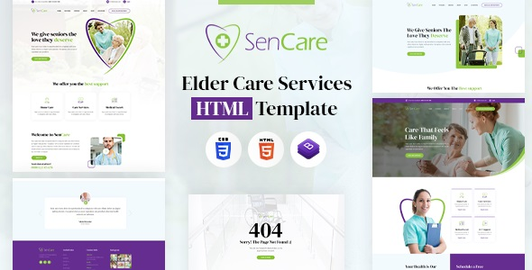

Created: 29 September, 2022
By: DesigningMedia.com
Support: www.designingmedia.com/support
Email: hello@designingmedia.com
Twitter: twitter.com/mediadesigning
Thank you for purchasing my theme. If you have any questions that are beyond the scope of this help file, please feel free to post your questions on my support forum at http://designingmedia.com/support. Thanks so much!

The SenCare | Elderly Home & Senior Care HTML5 website template is a custom design package that is exclusively made by Keeping in mind about Old Haven or Old Age Home. It provides the best way used for Elderly care, Senior Care, Orphanages, medical caring, Old Age Home, Poor people, Charity, Fundraising and other related Non Profit enterprises. It has a modern, clean, creative & unique design based on the latest technology.
It contains 03 Home Page layouts and about page layout and 06+ valid HTML5 page templates designs. The SenCare | Elderly Home & Senior Care template features the coded with Bootstrap v4.0, HTML5 & CSS3 and unlimited color schemes. It’s compatible with all modern browsers and search engine friendly. So showcase your artworks and services with this awesome template!
We have included 06+ custom HTML templates like 03 Home Page styles, about us styles, about styles and Contact Us Page style etc. Please open any HTML files with a text editor like Dreamweaver, Notepad or Notepad++ and edit any lines what you want.
We have included some custom CSS styles like style.css (default). Please open any CSS files with a text editor like Dreamweaver, Notepad or Notepad++ and edit any lines what you want. For example if you want to edit your banner images open style.css and look at ".banner-con" for banner image and change your styles.
Please open style.css file from SenCare/assets/css folder with a text editor and build your own colors. #000000 this is our primary color, you can search and replace all to your new color code.
We are wow.js on load animation for our website. you can edit them by simply adding or changeing the predefined classes name.
Note: All images are used for preview purposes only. They are not part of the template and hence, not included in the final purchase files.
Once again, thank you so much for purchasing this template. As I said at the beginning, I'd be glad to help you if you have any questions relating to this template. No guarantees, but I'll do my best to assist. If you have a more general question relating to the themes and templates on ThemeForest, you might consider visiting the forums and asking your question in the "Item Discussion" section.
Designing Media Team
Once again, thank you so much for purchasing this theme. As I said at the beginning, I'd be glad to help you if you have any questions relating to this theme. No guarantees, but I'll do my best to assist. If you have a more general question relating to the themes on ThemeForest, you might consider visiting the forums and asking your question in the "Item Discussion" section.
Designing Media Team